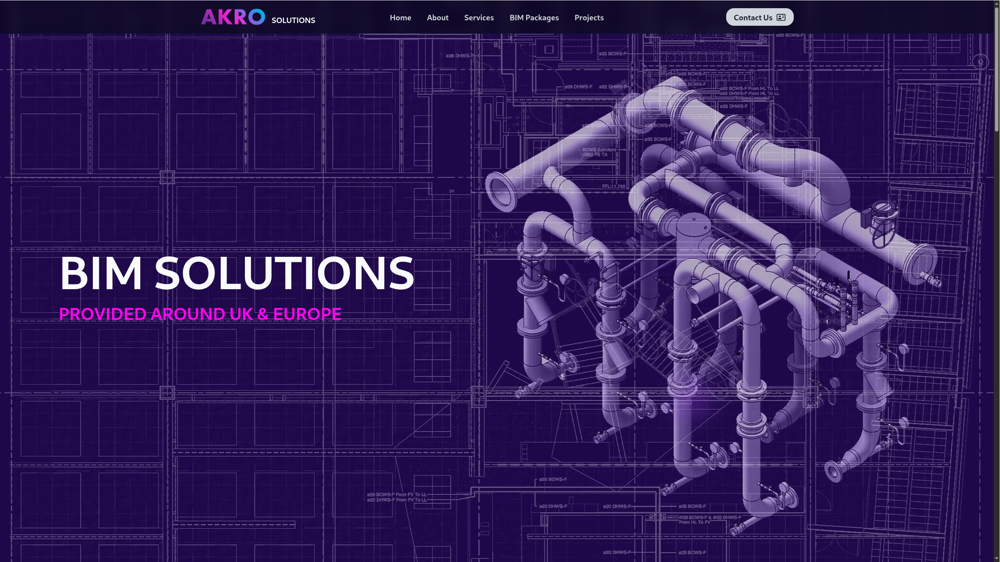

AKRO Solutions
BIM Engineering Marketing Website
Visit live websiteWebsite Screenshots

1 / 5
Project Overview
AKRO Solutions is a production marketing website for a BIM engineering and modelling studio operating across the UK and Europe. The site presents the company's project portfolio, service catalogue and pre-built BIM system packages to prospective construction clients.
The site is built as a small content system: each project, service and BIM package is authored once with structured front matter, while Eleventy collections generate the listings, navigation, detail pages and sitemap automatically.
The result is a fast static site with 22 pages, automatic image galleries, consistent SEO metadata and a visual identity built on a custom Tailwind theme.
Technical Stack
Eleventy
Nunjucks
Tailwind CSS
JavaScript
Git
Hetzner
Static Site Generation
- Eleventy pre-renders every page to plain HTML at build time.
- Nunjucks provides layouts, reusable components and collections.
- Tailwind CSS 4 defines the custom palette, responsive layouts and animations.
Content Architecture
- YAML front matter stores structured data for projects, services and packages.
- Eleventy collections drive listing pages, navigation and sitemap output.
- Build-time data files discover image galleries automatically and keep them synchronized.
Integrations & SEO
- Formspree handles contact submissions without a custom backend.
- Google Tag Manager supports analytics and conversion tracking.
- Per-page metadata and a generated sitemap improve discoverability.
Deployment
- Hetzner VPS — AKRO Solutions is hosted on Hetzner alongside the AKRO HR internal company management web application.